Galería de Momentos

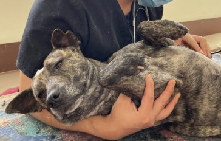
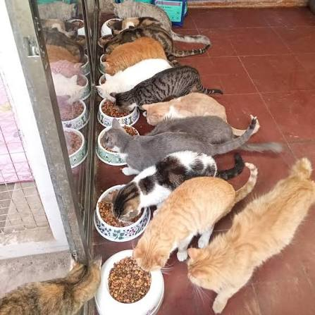
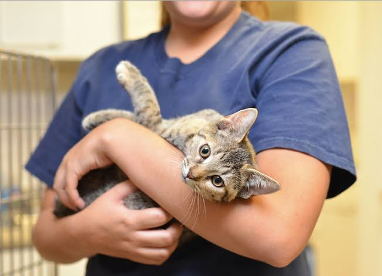
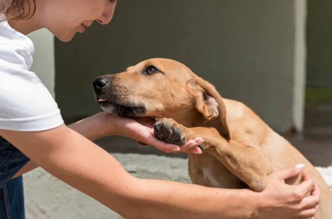
Rescatamos perros y gatos en situación de abandono y les damos una segunda oportunidad para encontrar una familia que los ame.
Huellitas de Esperanza es un refugio dedicado al rescate, recuperación y adopción responsable de perros y gatos. Nuestro compromiso es brindarles atención veterinaria, alimentación, cariño y la oportunidad de encontrar una familia.
Rescatar animales abandonados y promover la adopción responsable mediante campañas de concienciación.
Ser un referente nacional en protección animal y educación sobre el bienestar de las mascotas.
Amor, respeto, compromiso, empatía, solidaridad y responsabilidad al cuidado de la vida.
Mascotas rescatadas
Adopciones exitosas
Voluntarios activos
Años ayudando
Conoce a algunos de nuestros amigos que esperan encontrar un hogar.
Edad: 2 años
Juguetón, cariñoso y muy amigable con niños.
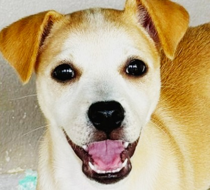
Edad: 3 años
Protector, obediente y le encanta correr libre.
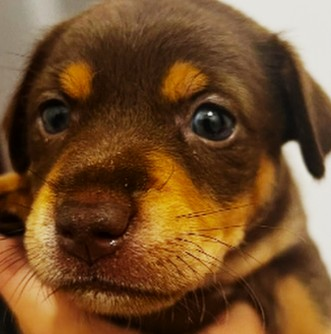
Edad: 1 año
Muy activo, lleno de energía y perfecto para familias.
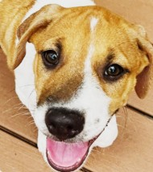
Edad: 5 años
Tranquilo, noble, calmado y muy cariñoso.
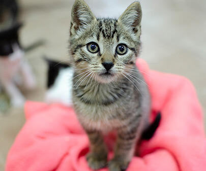
Edad: 1 año
Dulce, tranquila, silenciosa y muy limpia.
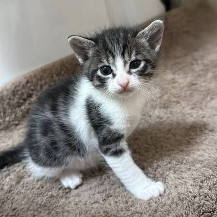
Edad: 8 meses
Curioso, explorador, juguetón y sociable.
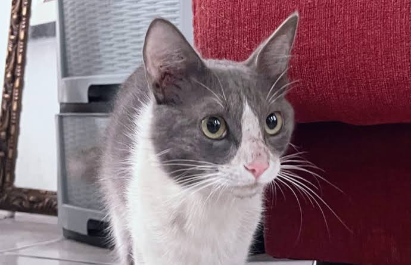
Edad: 2 años
Cariñosa, mimada y le encanta dormir al sol.
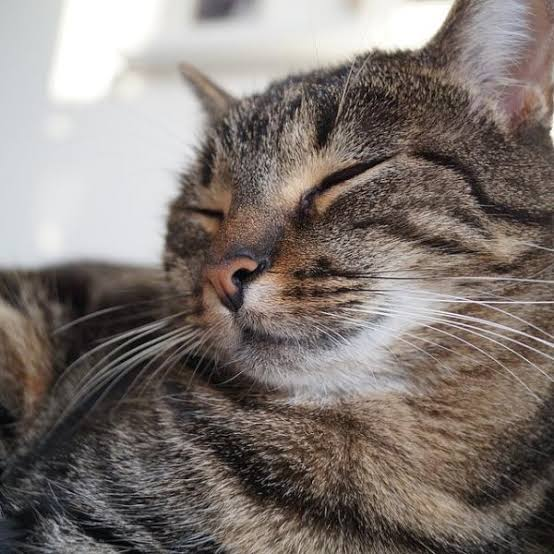
Edad: 4 años
Muy tranquila, silenciosa y excelente compañera.
Dale una segunda oportunidad a una mascota y cambia su vida para siempre.
Tu aporte ayuda a cubrir alimentación, insumos médicos y rescates de emergencia.
Dedica parte de tu valioso tiempo para cuidar, pasear y acompañar a nuestras mascotas.




Experiencias de personas que cambiaron su vida al abrirle las puertas a un amigo peludo.
"Adoptar a Rocky fue una de las mejores decisiones de nuestra familia. Es un compañero increíble, leal y protector."
"Luna llegó a nuestra casa hace seis meses y ahora llena nuestros días de una alegría inmensa. El proceso valió la pena."
"Gracias al refugio encontramos a Milo. El seguimiento médico y el proceso de entrega fue sumamente transparente."
No tiene costo monetario alguno. Solo solicitamos el compromiso firmado de brindar una vida digna, amor y un cuidado responsable.
Sí, por supuesto. Lo importante es elegir la mascota adecuada a tu espacio y ofrecerle el tiempo necesario para sus paseos diarios.
Puedes colaborar directamente con alimento balanceado, medicinas veterinarias, mantas o contactarnos para recolección a domicilio.
Ser mayor de edad (o contar con autorización), tener amor incondicional por los animales y disponibilidad de al menos 4 horas semanales.
¿Listo para cambiar una vida? Déjanos un mensaje y te responderemos de inmediato.